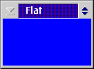
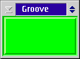
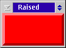
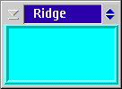
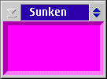

Permission to use, copy, modify, and distribute this software for any purpose
is granted without fee, provided that the above copyright notice and the
following paragraph appear in all copies of this software and supporting
documentation.
This software is distributed in the hope that it will be useful, but WITHOUT
ANY WARRANTY, even the implied warranty of MERCHANTABILITY or FITNESS FOR
A PARTICULAR PURPOSE. In no event shall the author be liable to any party
for direct, indirect, special, incidental, or consequential damages arising
out of the use of this software and its documentation. Modifications to
this software may be copyrighted by their authors and need not follow the
licensing terms described here, provided that the new terms are clearly
indicated on the first page of each file where they apply.
IN NO EVENT SHALL THE AUTHORS OR DISTRIBUTORS BE LIABLE TO ANY PARTY FOR
DIRECT, INDIRECT, SPECIAL, INCIDENTAL, OR CONSEQUENTIAL DAMAGES ARISING
OUT OF THE USE OF THIS SOFTWARE, ITS DOCUMENTATION, OR ANY DERIVATIVES
THEREOF, EVEN IF THE AUTHORS HAVE BEEN ADVISED OF THE POSSIBILITY OF SUCH
DAMAGE.
THE AUTHORS AND DISTRIBUTORS SPECIFICALLY DISCLAIM ANY WARRANTIES, INCLUDING,
BUT NOT LIMITED TO, THE IMPLIED WARRANTIES OF MERCHANTABILITY, FITNESS
FOR A PARTICULAR PURPOSE, AND NON-INFRINGEMENT. THIS SOFTWARE IS PROVIDED
ON AN "AS IS" BASIS, AND THE AUTHORS AND DISTRIBUTORS HAVE NO OBLIGATION
TO PROVIDE MAINTENANCE, SUPPORT, UPDATES, ENHANCEMENTS, OR MODIFICATIONS.
TKFrame is a simple custom control to create nice frames. It is inspired
by the frame widget in the Tcl/TK toolkit available on most platforms.
TKFrame uses presentation parameters to manage its shape and color.
I defined two new PP (see
TKFrame.h
):
| TKFS_FLAT | TKFS_GROOVE | TKFS_RAISED | TKFS_RIDGE | TKFS_SUNKEN |
|---|---|---|---|---|
 |
 |
 |
 |
 |
There are two way to include a TKFrame control in your application. The
simplest is to use TKFrame as a "local" control, visible only by the programs
including TKFrame.dll. Otherwise, a little more complicated method is to
install TKFrame.dll as a "public" dll, loaded at boot-time.
Using TKFrame is simple like including any other DLL. Follow these steps:
NOTE: before compiling TKFrame.c be sure that in the function _DLL_InitTerm the TKFrame window class isn't registered with CS_PUBLIC flag
TKFrame._DLL_InitTerm
A public control is a window control class registered at OS/2 boot-time.
All the standard controls are public controls: any application can create
a button, an entry field, a label, and so on, without manually register
their class window.
In fact, when OS/2 came-up, it loads many system dlls among which PMCTLS.DLL,
which contains all standard controls.
These privileged DLLs has one specific entry in the OS2.INI file, at the
application SYS_DLLS. Under SYS_DLLS there are two keys: LoadOneTime and LoadPerProcess.
DLLS in the first group are loaded in memory only at boot-time, while DLLS
in the last group are loaded at the start of any new process.
PMCTLS.DLL is in the LoadPerProcess section.
It is possible to add any custom DLL under SYS_DLLS application, so it
is possible to promote a custom control to become a system control.
A simple way to do this is shown in the
install.cmd
command file.
To build a public control follow these steps:
NOTE: before compiling TKFrame.c be sure that in the function _DLL_InitTerm the TKFrame window class is registered with CS_PUBLIC flag
test.c
in the source directory shows how to create TKFrame controls with various
styles and colors.
t1.cmd and t2.cmd are simple shortcut to compiler command line.